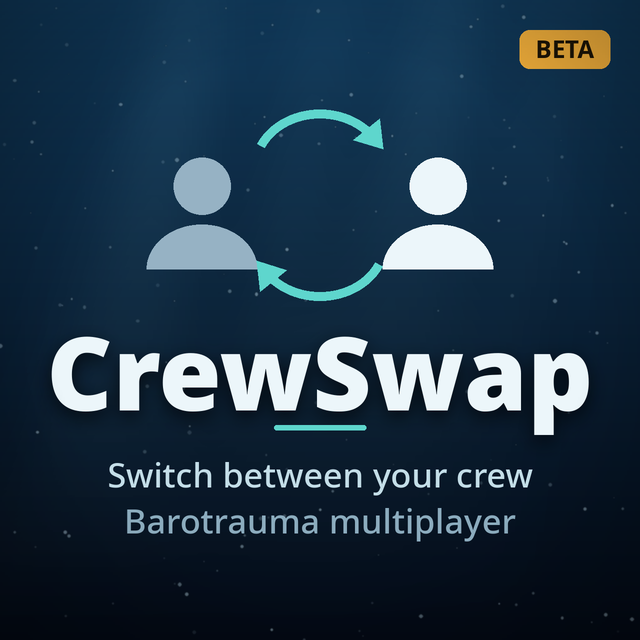

Click to switch
Click a crew member's row in the crew list to take control. Rows someone else is playing are greyed out and labelled with that player's name. Dragging rows and order buttons work as usual.
BETA Version 0.9.0 · Lua mod for Barotrauma
Switch between your crew in Barotrauma multiplayer campaigns, the way you can in singleplayer. Click a free crew member's row in the crew list and you're driving them; the body you left goes back to being a working bot.
This is a beta. The server-side logic is covered by unit tests and an automated 18-scenario run on a real dedicated server, but live switching between two or more human players hasn't been fully play-tested yet. Keep backups of campaigns you care about, and please report anything odd.

Everything CrewSwap changes while it's active. Admins pick the rules in game; the rest just works.
Click a crew member's row in the crew list to take control. Rows someone else is playing are greyed out and labelled with that player's name. Dragging rows and order buttons work as usual.
In shared mode anyone can take any free crew member. In own mode you can take your own character, crew you own (hired in own mode, claimed by playing them first, or assigned by an admin) and crew nobody has claimed yet.
On by default: your own character stays yours. While you're off playing someone else, nobody else can take your home character.
When the character you're driving dies, jump straight into another free crew member instead of spectating. If every player is down but free crew remain, the round is held open for up to two minutes.
Money belongs to the character, not the player. Bots keep their own wallets and salary, and round-end pay goes to the character you were driving.
Version checks on start-up, a patch-install audit, always-on start-up checks, an end-of-round integrity check that refuses to write a broken save, a lockdown mode and 20 kept campaign backups.
Outside Permadeath, crew who aren't anyone's own character return as bots next round instead of being deleted, with vanilla's death penalty after a saved round.
The package ships no C#, so nobody gets a "this mod wants to run code" prompt. Players without client-side Lua can still join and play; they just can't switch.
No new menus to learn. CrewSwap uses the crew list you already have.
Crew
CrewSwap patches the campaign's save code, so it checks versions carefully when the server starts. Full details are on the Requirements page.
Game
Barotrauma 1.13.4.x
On any other game version CrewSwap turns itself off and the campaign carries on as plain vanilla.
Server
Lua for Barotrauma, server-side
Workshop item 2559634234, with its C# run policy left at the default so server Lua is unsandboxed. Built against LuaCs commit 85ded59; on another LuaCs build CrewSwap logs a warning and carries on, guarded by its patch-install audit and runtime checks.
Every player who switches
Lua for Barotrauma, client-side
CrewSwap itself downloads from the server when you join. Players without client-side Lua can still play; they just can't switch.
Game mode
Multiplayer campaign
MidRound, BetweenRounds, None and Permadeath respawn modes. CrewSwap stays off under Ironman and outside campaigns.
CrewSwap was built with AI assistance (Claude), under the direction and review of a real software engineer. It started as a mod for personal use with friends, and it's shared here in case others enjoy it too.
If you're not comfortable with AI-assisted mods, no hard feelings at all. You don't have to use it.